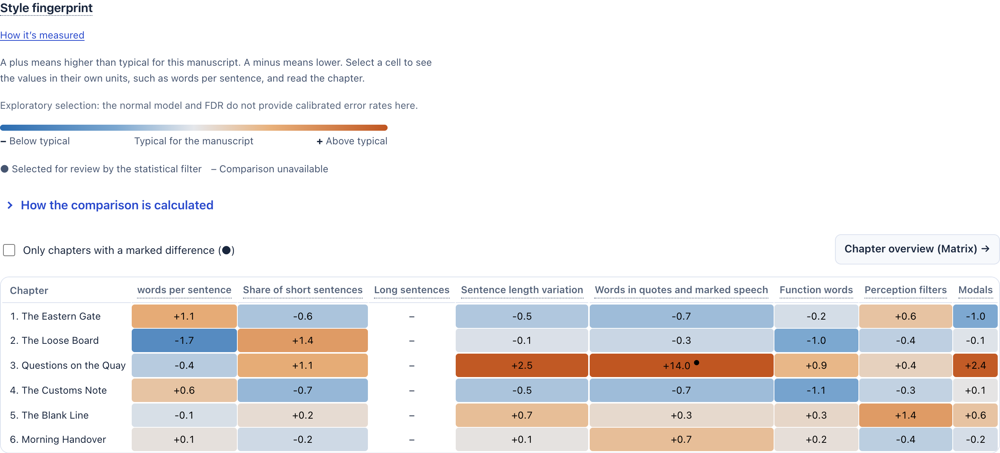

Zwei Fassungen vergleichen
Vergleiche deinen offenen Entwurf mit der gespeicherten Fassung. Lixity misst beide mit denselben Einstellungen, damit du die Änderungen leichter einordnen kannst.
Ein lokaler Arbeitsraum fürs Schreiben
Springe von einer auffälligen Wiederholung direkt zum Absatz. Vergleiche deine Überarbeitung mit der letzten Fassung und halte Quellen und Figurendossiers beim Manuskript. Die Analyse läuft auf deinem Rechner.
Kürze einen Satz in der deutschen Textprobe und beobachte, wie sich die Satzlängen ändern.
Aufnahme ohne Ton aus der Entwicklungsversion mit dem fiktiven Projekt Warehouse 4.
Das Video konnte nicht geladen werden. Öffne stattdessen die interaktive Demo. Beispielprojekt ansehen (Englisch)
Vergleiche deinen offenen Entwurf mit der gespeicherten Fassung. Lixity misst beide mit denselben Einstellungen, damit du die Änderungen leichter einordnen kannst.

Prüfe Satzrhythmus, erkannte Zitate oder wiederholte Wörter. Öffne einen Hinweis und sieh direkt im Absatz, welche Wörter oder Sätze in die Messung eingehen.

Beginne ein Figurendossier mit den Stellen, an denen ihr Name vorkommt. Lies sie im Zusammenhang und ergänze eigene Notizen und Quellenzitate.

Lade ein gespeichertes Dossier mit Textstellen und Quellenzitaten als PDF herunter. Für deine Testleser:innen stellst du eine Lesewebsite mit den Kapiteln und Hintergrundnotizen zusammen, die du teilen möchtest.
Lixity zeigt gemessene Muster und macht die Stellen dahinter sichtbar. Lies sie im Zusammenhang und entscheide, ob eine Wiederholung, ein langer Satz oder ein Tempuswechsel zur Szene passt.
Prüfe Satzlängen, erkannte Zitate und Wiederholungen im Absatz und vergleiche Kapitel. Öffne eine Markierung und sieh, was gezählt wurde.
Die eingebaute Analyse läuft auf deinem Rechner. Dort liegen auch die Projektdateien. Optionale Dienste wie Kartenanbieter oder externe Sprachmodelle haben eigene Datenanforderungen.
In der Browser-Übung bearbeitest du einen Absatz und prüfst ihn mit vereinfachten Regeln. Die englische Demo zeigt ein größeres Beispielprojekt zum Lesen. Für die vollständige Analyse und eigene Projekte installierst du Lixity lokal.
Wähle die Einrichtung für Windows, macOS oder Linux. Die Anleitung führt dich von der Installation zum ersten Manuskript.
Download und Einrichtung (Englisch)Die veröffentlichte Browser-App ist auf PyPI erhältlich. Desktop-Installer gibt es als Testdownloads. Die Demo zeigt den Entwicklungsstand v0.9.1.
Latest published release · v0.9.1 release notesWebsite und App sind in sieben Sprachen verfügbar. Die Analysesprache wählst du ausdrücklich; Englisch ist die Voreinstellung. Die technische Dokumentation bleibt Englisch.
Sprachregeln und Prüftiefe unterscheiden sich je nach Sprache; Deutsch und Englisch bieten die breiteste Abdeckung. Die Oberflächensprache verändert niemals dein Manuskript.
Technical guides, methods and automation contracts are maintained in English.
Erzähl uns, was du tun wolltest und wo du ins Stocken geraten bist. Ein kurzer Ablauf oder ein fiktives Beispiel genügt.
Feedback geben